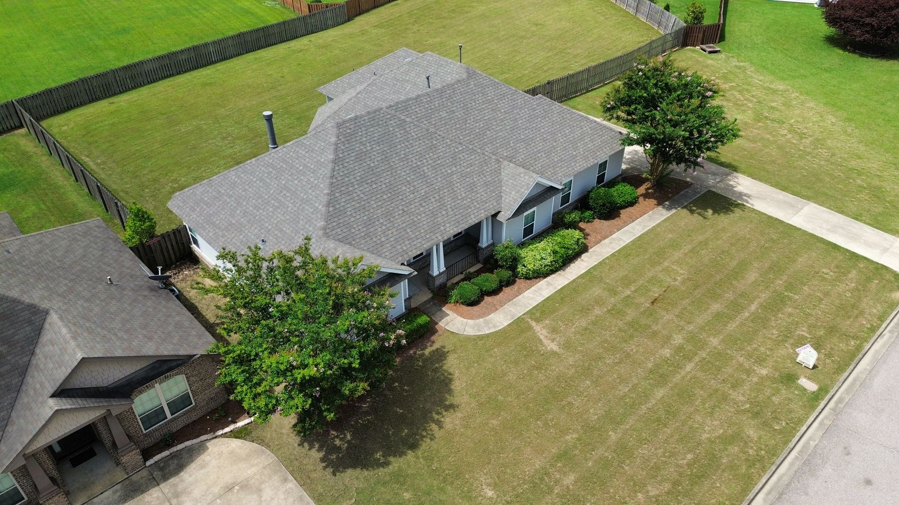

Repair or Replace? Here Is How We Decide
Not every roof problem needs a new roof. Here is exactly how we make the call, what each path costs, and our promise that the cheaper fix wins whenever it will truly do the job.

If a Repair Will Do,
That Is What We Quote
A repair costs a small fraction of a replacement and can add years to the roof you already have. So when we inspect your roof, the first question is not how big a job we can sell. It is whether a repair will genuinely solve the problem. If it will, that is the quote you get, with photos showing exactly why.
We only bring up replacement when a repair no longer makes financial sense, and when we do, we show you the evidence and honest numbers for both paths. No signing pressure on the first visit. Get other bids if you want them. Take your time. A roof is a big decision and you should make it with clear eyes.
Get an Honest AssessmentWhen a Repair Is Enough
Wind lifted or tore off a handful of shingles. If the damage is confined to one area and the surrounding shingles are still sound, we match the shingle and repair the spot. This is one of the most common calls we get after a thunderstorm, and it is almost always a repair, not a replacement.
A leak around a chimney, valley, or pipe boot. Most leaks are flashing problems, not roof problems. Reworking the flashing or replacing a cracked boot fixes the leak for a fraction of what a new roof costs. We track down the actual source rather than guessing, because a leak often shows up inside far from where the water gets in.
The roof is mid-life and healthy overall. If your shingles have 10 or more good years left and the problem is isolated, a quality repair protects your investment without restarting the clock early. We treat small repair jobs with the same care as full replacements, because the repair customer of today is the replacement customer a decade from now.
When Replacement Makes Financial Sense
The repairs are starting to stack up. When you are calling a roofer every season, the math changes. Several repairs on an aging roof can cost more than they return, because each fix buys less time on a system wearing out everywhere at once. At that point we show you both numbers side by side, including financing that turns a replacement into a manageable monthly payment.
Widespread storm or hail damage. Hail bruising across multiple slopes is not a patch situation, and it is often an insurance claim. We document everything with photos, meet your adjuster on the roof, and guide the claim while you stay in control of it.
The decking is going soft. If water has been getting past the shingles long enough to rot the wood underneath, spot repairs are bandages on a structural problem. This is the one we will not sugarcoat, because waiting makes it more expensive every month. See what a full tear-off includes on our roof replacement page.
The roof has both storm damage and plain old age. This is the trickiest call, and the one where you most need a contractor who is not chasing the biggest ticket. We will tell you plainly which part of the problem is storm-related, which part is wear, and what that means for a claim and for your wallet.
Second Opinions Are Welcome Here
A fair number of our inspections start with a homeowner who has already been told something by somebody else. A storm chaser said the whole roof has to go. An insurance claim came back denied. A quote from another company did not sit right. If that is you, bring us in for a free second look.
We will get on the roof, photograph what we actually find, and give you a written, itemized picture of what needs doing and what does not. If the first opinion was right, we will say so. If it was not, you will have the photos to prove it. Either way, the inspection is free, the answer is honest, and nobody here will ask you to sign anything on the spot.
Repair or Replace Questions, Answered
How do I know if my roof needs repair or full replacement?
Age, extent, and decking. A roof under 15 years old with isolated damage is almost always a repair. A roof past 20 years with problems on multiple slopes is usually replacement territory. And if the decking underneath has gone soft, replacement stops being optional. We inspect all three factors, photograph what we find, and give you a written recommendation with honest numbers for whichever paths make sense.
Will you give an honest opinion even if it means a smaller job for you?
Yes, and it is not charity, it is good business. A homeowner we saved from an unnecessary replacement tells their neighbors, and their neighbors call us when their roofs really are done. We put every recommendation in writing with photos, so you are never taking our word on faith.
A storm chaser told me I need a whole new roof. Should I believe them?
Get a second opinion before you sign anything, from us or from any local, licensed contractor. Some storm-chaser verdicts are accurate, and some are a sales quota talking. The tell is evidence: a legitimate recommendation comes with photos of specific damage on your specific roof. If all you got was urgency and a contract, that is your answer.
My insurance claim was denied. Is it worth a second look?
Often, yes. Claims usually get denied or underpaid because damage went undocumented, not because the damage is not there. We inspect for free, and if we find legitimate storm damage the first inspection missed, you will have the photo evidence to request a re-inspection. If the denial was fair, we will tell you that too, along with what a repair would actually cost out of pocket.
How much does a roof repair cost compared to a replacement?
Most common repairs, like replacing wind-damaged shingles or reworking flashing, run a small fraction of a full replacement. That is exactly why we quote repairs when they will work. The free inspection comes with a written, itemized estimate so you see the real numbers for your roof, not a guess from a web page.
Can you match new shingles to my existing roof?
Usually, yes. We identify the manufacturer, line, and color of your existing shingles and match as closely as the product allows. On an older roof, sun-faded shingles mean the match will not be invisible on day one, and we will show you honestly how close we can get before you decide.
Get the Straight Answer
Free inspection, written findings with photos, and an honest recommendation either way. That is the whole pitch.
Schedule Free Inspection